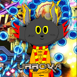

OC: Evilution
Perdon, necesitaba hacer uno de estos xDD | Sorry, i needed to make one of these xDD
URROVA Version 1.1
20/4/2021

Mi OC tomando mate. Luego lo pegue en un fondo con bloques sin textura, y un fondo lleno de bolas de cacodemon.
My OC drinking mate. After that i pasted it in a background with untextured blocks, and a bg full of cacodemon balls.
URROVA Version 1.0
22/10/2020

Mi OC flotando. Originalmente lo iba a usar de sprite para un jefe secreto en IMPSCAPE pero luego descarte la idea.
Es la primer version del OC que puse en la pagina principal.
My OC floating. Originally i wanted to use it as a sprite for a secret boss for IMPSCAPE but later i scrapped the idea.
Is the first version of the OC i have put in the main page.
URROVA Version 0.1
13/08/2020
La primera version de mi OC, que intente hacerlo full hd y quedo bien feo, asi que no quiero poner el original.
Asi que pongo el pfp que use en doomworld de 128x128 pixeles porque me da mucha verguenza :((
Luego de este no me atrevi a hacer otra version full hd hasta la actualidad.
The first version of my OC, that i wanted to make it full hd and its so ugly, so i dont want to put the original version.
So i will put the pfp i used in doomworld, 128x128 pixels, because it makes me ashamed
After this i didnt dare to make another full hd version until today.
Ayuda